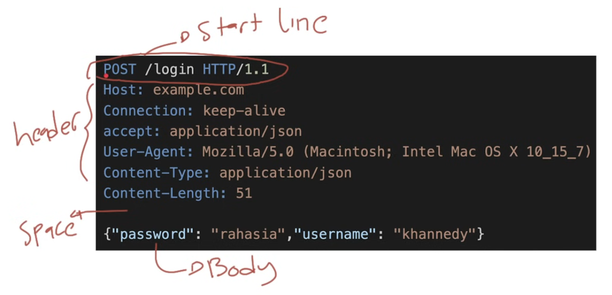

HTTP Method
- Dalam HTTP Request, hal yang pertama kita perlu tentukan adalah HTTP Method
- HTTP Method mirip seperti kategori request
- Ada banyak HTTP Method yang dapat kita gunakan ketika membuat HTTP Request, dan kita bisa sesuaikan sesuai dengan kebutuhan yang kita inginkan
HTTP Message

Jenis HTTP Method
- GET method digunakan untuk melakukan request data. Request menggunakan GET hanya untuk menerima data, bukan mengirim data
- HEAD method digunakan sama seperti GET, tapi tanpa membutuhkan response body
- POST method digunakan untuk mengirim data ke Server, biasa POST digunakan untuk mengirim data baru sehingga biasanya memiliki request body
- PUT method digunakan untuk mengganti semua data yang terdapat di Server dengan data baru yang dikirim di request
- DELETE method digunakan untuk menghapus data
- PATCH method digunakan untuk mengubah sebagian data
- OPTIONS method digunakan untuk mendeskripsikan opsi komunikasi yang tersedia
- TRACE method digunakan untuk request method debugging. Response TRACE method akan mengembalikan seluruh informasi yang dikirim oleh Client. Saat membuat web, sangat tidak di rekomendasikan mengaktifkan TRACE method ketika sudah live di production
Back ||
Next